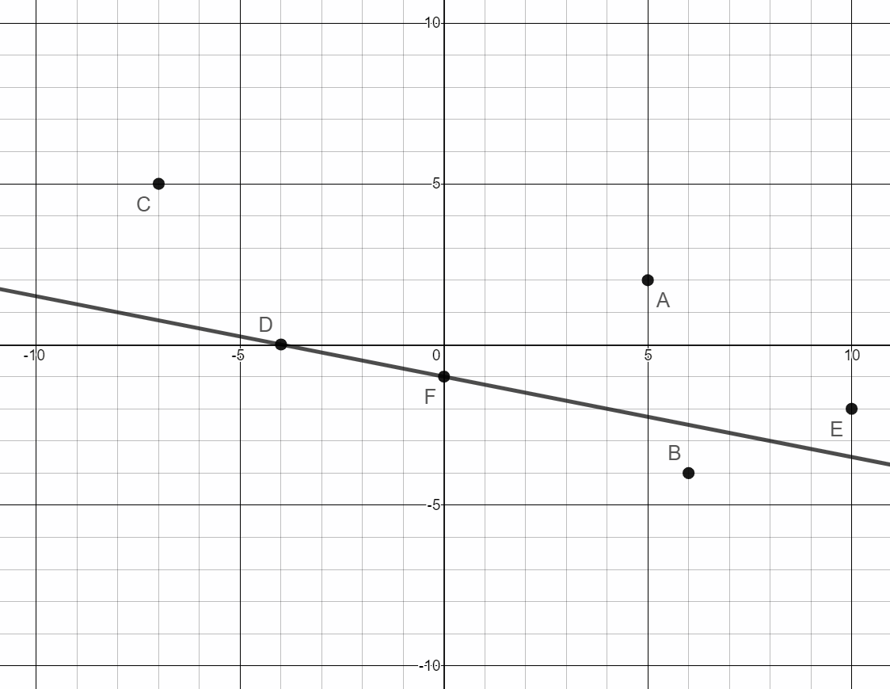
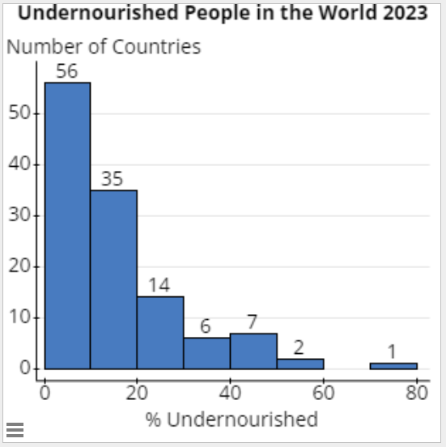

1.2 Graphing Data
Point A is graphed on the number line below. The scale of the number line is 2 since the scale marks are 2 units apart.
Number Lines
Determine the scale of each number line. Label EVERY scale mark. Graph each point with a big dot at the appropriate location and label the point.
-
A = 2B = 12C = 7.5
-
A = 250B = 100C = 0
-
A = 40B = -30C = 85
-
A = 3.5B = 0.5C =-6
-
A = 6.8B = 6.4C = 5.2
-
 Write the ordered pair for each point on the graph.
Write the ordered pair for each point on the graph.- Point A
- Point B
- Point C
- Point D
- Point E
- Point F
(5,2)
(6,-4)
(-7,5)
(-4,0)
(10,-2)
(0,-1)
- Draw a line passing through points D and F
- Name the y-intercept of this line.
- Name the x-intercept of this line.

Point F (0,-1)
Point D (-4,0)
- Classes or Bins are intervals of equal width used to sort data.
- Lower Class Limits are the smallest numbers that can actually belong to a class.
- Upper Class Limits are the largest numbers that can actually belong to a class.
- Class Midpoints are the values in the middle of a class.
- Class Width is the difference between two consecutive Lower Class Limits.
- The following frequency distribution shows the ages of students in an evening section of Statistics at Pellissippi. Use the frequency distribution to construct a relative frequency distribution.
Age of PSCC Stat Students Frequency Relative Frequency Relative Frequency
(in percents)16-25 3 \(\frac{3}{32}=0.094\)
9.4%
26-35 7 \(\frac{7}{32}=0.219\)
21.9%
36 - 45 12 \(\frac{12}{32}=0.375\)
37.5%
46 - 55 8 \(\frac{8}{32}=0.25\)
25%
56 - 65 2 \(\frac{2}{32}=0.063\)
6.3%
\(\sum f=32\)
1.001
100.1%
- What is the upper class limit of the 3rd class?
45 - What is the lower class limit of the 5th class?
56 - What is the class width?
10 - What is the midpoint of the 1st class?
20.5 - Use the given frequency distribution to construct a cumulative frequency distribution.
- Each class is defined as: less than the lower class limit of the next class
- Add all frequencies of the current class and all previous classes. This is the cumulative frequency.
Age Range Frequency Cumulative Age Ranges Cumulative Frequency 16 - 25 3 Less than 26 3
26 - 35 7 Less than 36
10
36 - 45 12 Less than 46
22
46 - 55 8 Less than 56
30
56 - 65 2 Less than 66
32
- Literacy Rates: Load the Literacy Rates World data set in StatCrunch. The data represent the adult literacy rates for various countries. Adult literacy rate is the percentage of people ages 15 and above who can, with understanding, read and write a short, simple statement in their everyday life. Source: World Population Review Literacy Rates
Create a Frequency Distribution and Histogram for the data. Determine the class width if you want to create a table with 5 classes.
The minimum value from the data is:
19.1% The maximum value from the data is:
100% Calculate the class width using the minimum data value, maximum data value, and number of classes:
\(\frac{100-19.1}{5}=\frac{80.9}{5}=16.18\)
When calculating class width, always round up to the next value. Because we calculated 16.18, we will use a class width of 20. For our frequency distribution, we will have a more usable frequency distribution if we set 10 as our lower class limit instead of 19.1.
Literacy Rate Frequency 10.0 – 29.9 1
30.0 – 49.9
13
50.0 – 69.9
19
70.0 – 89.9
39
90.0 – 109.9
136
![A histogram representing the adult literacy rates in various countries. The horizontal axis represents the literacy rates in percentages. The vertical axis represents the number of countries in whose literacy rate corresponds to one of the 5 ranges and goes from 10 to 110, counting by 20. Each bar represents the same ranges as the ones described in the table, 10-29.9, 30-49.9, 50-69.9, 70-89.9, and 90-109.9. The height of the bars is determined by the number of countries that are represented in the ranges, 1, 13, 19, 39, and 136 respectively.](images/u1s4p6k.png)
- Malnutrition – Percent of undernourished population: Load the Undernourished data set in StatCrunch. The data represent the percentage of each country's population that is undernourished. The prevalence of undernourishment is the share of people who do not get enough calories to live a healthy life.
Source: Worldometer Undernourished Data
Create a Frequency Distribution and Histogram for the data. The frequency distribution should have 8 classes.
Midpoint % undernourished Frequency 4.95
0.0- 9.9 56
14.95
10.0-19.9
35
24.95
20.0-29.9
14
34.95
30.0-39.9
6
44.95
40.0-49.9
7
54.95
50.0-59.9
2
64.95
60.0-69.9
0
74.95
70.0-79.9
1

- The following stem and leaf plot gives the fuel economy information (combined city/highway miles per gallon) for Toyota’s 2024 vehicle line. Key 3|5 = 35 miles per gallon
Stem Leaves 12 7 7 11 4 9 10 4 9 4 8 7 6 5 0 2 2 4 7 4 1 2 6 8 9 3 0 0 0 0 1 2 2 3 4 4 5 5 5 5 6 6 6 9 9 2 0 0 1 1 2 2 2 3 3 3 4 4 4 5 5 6 6 6 7 7 8 9 9 1 7 7 9 - What is the lowest miles per gallon for any Toyota vehicle?
17 mpg
- What is the lowest miles per gallon for any Toyota vehicle?
- What is the highest miles per gallon for any Toyota vehicle?
127 mpg - How many Toyota vehicles have a fuel economy between 30 and 40 miles per gallon, inclusive?
24 vehicles
Graphing Points
Point G is located at the ordered pair (-2,4)
Frequency Distributions
Cumulative Frequency Distributions (Totals)
Stem-and-Leaf Plots
| Stem | Leaves |
|---|---|
| 47 | 1 9 |
| 48 | 6 7 8 |
| 49 | 1 3 5 |
| 50 | |
| 51 | |
| 52 | |
| 53 | |
| 54 | |
| 55 | |
| 56 | 0 |
| 57 | 0 2 2 4 5 8 |
| 58 | 3 |
- What was the fastest 400-meter time?
47.1 seconds